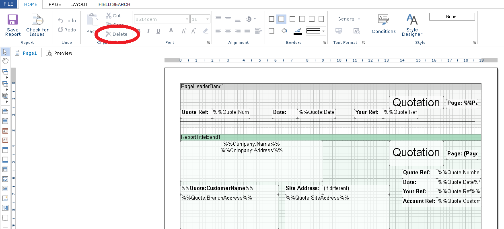

This module enables you to create and modify your own report layouts.
ConstructionManager.Net comes supplied with a selection of standard layouts for each module of the system. The Layouts module allows you to duplicate the standard layouts and then modify them (the standard layouts cannot be modified). These modified layouts can then be used instead of, or as well as, the standard layouts.
For the purpose of this help text, we will be using the Quotes module as an example.
To access the Layouts module, select the Layouts tab on the main menu, and then the Quotes tab - see below, circled in red. This will open the following screen:
As you can see, there is only one standard layout supplied qith the Quotes module. Before you can work on layouts, you need to duplicate the existing standard layout into your own, customisable, version.
To duplicate a layout, select the layout to be duplicated from the list, and click the Copy icon, circled in red below.
A box will appear, so you can give the new duplicated layout a name - we suggest a name that you will recognise by including your company name, so you know it has been customised. Click OK and the layout will be duplicated - see below.
You can now perform various functions on the new layout (delete, duplicate etc.), but to modify, just double-click on the layout name - the following screen will appear:
This screen displays the report layout template - in this case it is a standard invoice layout.
To move the highlighted field, which contains a text field "Invoice" - circled in red above -, left-click and hold on the field, and drag it to a new position.
To remove the same highlighted field, - circled in red above -, left-click on the field and then click on the delete button: the field will disappear.
To add a text field, click and hold on the icon on the left-hand side of the template - circled in red above, left-side - and drag the icon to the correct position on the template.
You can then move or re-size the field, using the field handles.
The text field is created initially with a default value - to update the text, double click on the field and the Expression Editor will be displayed. Over-write the existing text with the correct value, and click on the OK button.
To add a data field, you first need to create a text field, as in the example above.
You then need to search for the correct field. Click on the Field Search button - circled in red above, at top left, and the Search for Fields display will appear.
Enter part or all of the field description in question in the search box - circled in red above, at top right. In this case, we are looking for the Completion Date, so you could key "Complet" in the search box.
A list of fields will be displayed - highlight the field you want, copy it, and overwrite the field contents in the Expression Editor.
Now close the Search for Fields display, click OK on the Expression Editor and the layout will be updated with the new field..
To add a logo, click and hold on the icon on the left-hand side of the template - circled in red above, left-side - and drag the icon to the correct position on the template: this will create a blank field.
You then need to upload an image to use as an icon - double-click on the blank field and a standard Windows file selection screen will appear: click on the Open button.
Then double click on the image you want - in this case a "Blue Hat" logo, click on the OK button, and the logo will move to the correct field. The field can then be moved or re-sized in the normal way.